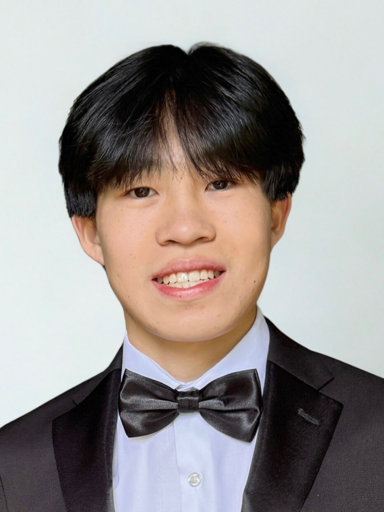

About Me


My Story
Hi, I'm Cayden Lai, a first-year Computer Engineering student at Georgia Institute of Technology originally from Johns Creek, Georgia. My current concentrations are Computing Hardware and Emerging Architecture and Systems and Architecture. Some of my passions outside of engineering include playing basketball, running, and exploring different places.
Professionally, I'm very interested in the intersection of hardware and software, especially embedded systems, robotics, and engineering where the code has a direct physical consequence. In high school, Science Olympiad shaped me into a communicator and team leader and now at Georgia Tech, I've been involved in RoboJackets where I've learned to write embedded C++ firmware for an autonomous robotic platform. I've also built an ML-powered antibiotic resistance predictor at a hackathon and designed a full embedded cooling system as my Individual Discovery Project, experiences that confirmed exactly where I want to take my career.
This ePortfolio showcases my technical projects, academic journey, and engineering identity, built for recruiters, collaborators, and anyone who shares a passion for purposeful technology. Browse the pages to learn what I've built, where I'm headed, and how to get in touch. I'm currently seeking Fall 2026 internships in embedded systems, autonomy, or robotics engineering.
Career Goals
Engineering is a long journey. Here's where I'm focused right now and where I aim to be in the years ahead.
Short-Term Goals
Build a Strong Technical Foundation
Complete Georgia Tech's ECE core — Digital Systems Design, ECE 2035, ECE 2031 — while applying each concept to real hardware builds outside the classroom.
Gain Real-World Engineering Experience
Deepen my firmware work on RoboJackets RoboNav and secure a Summer 2026 internship in embedded systems, autonomy, or robotics engineering.
Expand Into Leadership
Take on a formal leadership role within RoboJackets or a related organization, and continue tutoring as a way to sharpen my own thinking while giving back.
Long-Term Vision
Pursue a Master's Degree in Computer Engineering
After my B.S. (expected May 2027), pursue an M.S. in ECE focused on embedded systems or robotics — at Georgia Tech or a top research university — to go deeper into the systems I want to build professionally.
Work on Autonomous Systems at Scale
Become a firmware or robotics systems engineer at a company building autonomous platforms in robotics, aerospace, or defense — where every decision at the firmware layer has a direct physical consequence.
Make a Lasting Impact
Build technology that makes people safer and more capable, and mentor the next generation of engineers who are just finding their way into the field.
Key Milestones
Every engineer's story is shaped by a series of moments. Here are the ones that have defined mine so far.
2023 – 2025
Science Olympiad — Testing Manager
Served as Testing Manager for my high school's Science Olympiad team, leading preparation for 20+ STEM engineering events and mentoring over 40 students across two competitive seasons. Organized study resources and training sessions that improved team performance at regional and state competitions. This role taught me how to lead, communicate technical concepts clearly, and deliver results under tight deadlines.
August 2025
Enrolled at Georgia Tech & Joined RoboJackets
Began the B.S. Computer Engineering program at Georgia Institute of Technology with a 4.00 GPA. In my first week, joined RoboJackets (RoboNav Team) as an Electrical/Firmware Engineer — contributing to power distribution architecture and writing embedded C++ firmware for an autonomous robotic platform. Jumped straight into real engineering work before my second month of college.
February 2026
bacter.ai — Hackathon Build
Built bacter.ai in 36 hours — a machine learning web application that predicts antibiotic resistance directly from bacterial DNA sequences. Trained 10 XGBoost classifiers on 3,030 genomes and deployed a full-stack application with a Flask API and React/D3 dashboard. The project achieved up to 85% accuracy and 94.6% sensitivity, and showed me I could rapidly prototype at the intersection of hardware thinking and machine learning.
March 2026
Individual Discovery Project — Embedded Cooling System
Designed and built an Arduino-based temperature-controlled ventilation system as my ECE 1100 Individual Discovery Project. Integrated a TMP36 analog sensor, MOSFET motor driver, and PWM-based fan control — implementing the full embedded firmware pipeline from ADC sampling to closed-loop output. This project cemented my interest in embedded systems and hardware-software co-design.
Present — Spring 2026
Seeking Summer 2026 Internship
Currently completing my first year at Georgia Tech (4.00 GPA), continuing firmware work with RoboJackets, and actively seeking Summer 2026 internships in embedded systems, autonomy, or robotics engineering. My near-term focus is deepening my embedded Linux and real-time systems skills while building toward a career leading firmware teams on autonomous platforms.